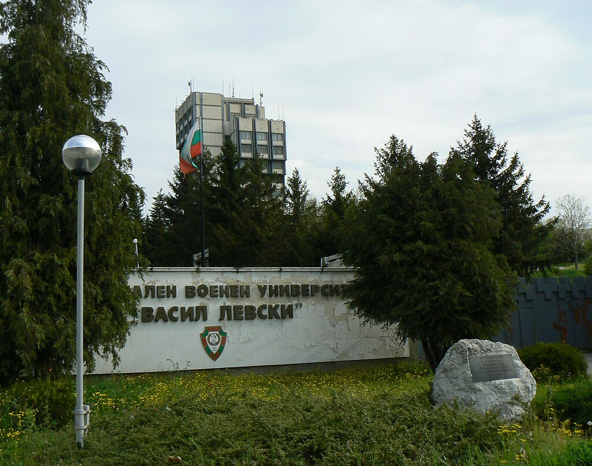

Vasil Levski National Military University
Vasil Levski National Military University is a military higher education institution with 2 faculties in the cities of Veliko Tarnovo and Shumen, Bulgaria.
Although it received the status of a higher school only in 1924, the university is the higher education institution with the longest history in Bulgaria as a continuation of the Military School founded in Plovdiv in 1878.
